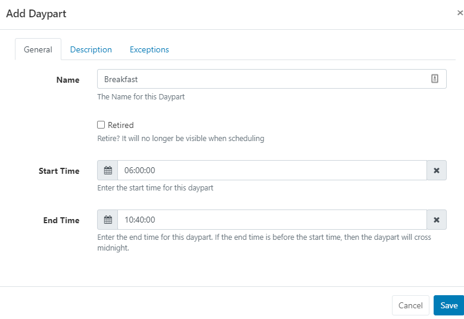

Dayparting
In broadcast programming, dayparting is the practice of dividing the broadcast day into several parts, in which a different type of radio or television program apropos for that time period is aired. – Wikipedia
BI Square Brand Activation supports the creation of multiple Dayparts, which can include day of the week exceptions. This means that a single day can be split into as many pre-defined parts as necessary.
A typical use case would be a hospitality User who has different content to display for Breakfast, Lunch and Dinner. Dayparting allows that User to create a Breakfast, Lunch and Dinner daypart, each of which starts and ends on a different day for selection to simplify day to day scheduling.
Add Daypart
Dayparts are created and administered from Dayparting on the main CMS menu.
- Select the Add Daypart button.
- Complete the form fields to configure.
Include Exceptions to define different start and end timings for selected days!
On Saving, the Daypart will be available for selection in the Dayparting drop down menu of the schedule form when adding an Event.
The below Daypart form shows an example Breakfast Daypart:

Saturday and Sunday have been configured as exceptions so that breakfast starts and ends at different times on those days:
On Scheduling, the Breakfast Daypart will appear in the drop-down for selection. On selecting, the from/to date time selectors will change to date only selectors and the time will be taken from the Daypart configuration - according to the day of the week the Event occurs on.

Edit Dayparts
Make edits to existing Dayparts using the row menu.
Add Sharing options for Dayparts to Share with other Users/User Groups!
Updating the start/end times or exceptions for a Daypart will cause existing future events to be updated with the newly defined times.
Existing recurring Schedules, set to recur beyond the current time, will have new Schedules created to reflect the updated information.